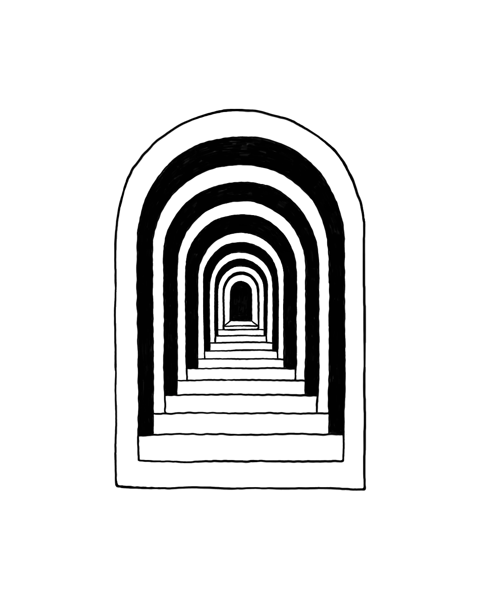

El ser humano primitivo no tenía diseño. Tenía algo más urgente: la necesidad de leer el mundo para no morir en él. Las nubes que anunciaban lluvia. Las huellas que indicaban presa. El color de una fruta que decía esto te mata.
Eso es un signo en su forma más pura: un fenómeno que apunta a algo que no es él mismo. No es decoración. Es información de vida o muerte codificada en la forma, el color, la textura. La psique humana aprendió a leer signos antes de aprender a hablar. Llevamos esa capacidad grabada en capas que la conciencia moderna apenas roza.
Jung lo describe con precisión: el inconsciente colectivo no es una metáfora poética. Es el archivo de millones de años de experiencia humana, sedimentado en estructuras que reconocemos antes de entenderlas. El símbolo opera ahí — en esa capa. No convence. No argumenta. Activa.
— C.G. Jung, Arquetipos e Inconsciente Colectivo
Lo que Jung está diciendo, con toda la paciencia de alguien que sabe que le van a discutir, es que hay dimensiones de la experiencia humana que la ciencia reductiva no puede tocar. Y el símbolo vive ahí.
En esa zona que el método experimental no puede cartografiar porque cada vez que intenta medirla, la aplana.
En algún momento — y no fue de golpe, fue una pendiente larga y suave — decidimos que diseñar era hacer cosas que se ven bien.
No fue una conspiración. Fue algo peor: fue comodidad. Es más fácil enseñar a usar Canva que enseñar a ver. Es más fácil vender templates que explicar por qué el espacio en blanco se siente como respirar. Es más fácil llamar logo a cualquier dibujito que sostener la incomodidad de lo que un símbolo real exige.
Y así, por acumulación de facilidades, vaciamos las palabras.
Diseño hoy significa cualquier cosa con un color de fondo y una tipografía gratis. Logo es el resultado de cinco minutos en una IA generativa. Marca es el nombre de tu emprendimiento con una fuente 'que te gusta'. Símbolo... esa ya casi no la usa nadie. Se nota.
Jung llama participation mystique al estado en que el ser humano primitivo no se distingue del mundo que lo rodea — cuando el signo y lo que señala son casi la misma cosa.
Es un estado de densidad semiótica total. Lo que hicimos con el diseño es exactamente lo opuesto: vaciamos el signo hasta que solo quedó la forma sin el referente.
Es la pareja de adolescentes que se dice "te amo" en el segundo mes. Las palabras están. El peso, no.
Hay una frase en latín que Jung cita en el contexto de los ritos de iniciación: une sorte de mort volontaire — una especie de muerte voluntaria. Es el momento en que el iniciado entrega su imagen anterior de sí mismo para poder ver más allá de su propio reflejo.
Un símbolo real hace eso. No te muestra lo que ya sabés — te lleva a donde no habías estado. Opera en esa capa del inconsciente donde las estructuras arquetípicas viven, y activa algo que el argumento racional no puede tocar.
Cuando reducimos el diseño a decoración, perdemos exactamente eso: la capacidad de crear objetos visuales que hagan algo en la psique del que los mira. No que gusten. No que 'comuniquen los valores de la marca'. Que activen. Que señalen algo más grande que ellos mismos.
Y el que pierde más no es el diseñador — es el cliente que paga por un logo y recibe una firma sin peso. Una forma sin alma. Algo que funciona en un Google-Doc y no significa nada en ningún otro lugar.
Acá está la parte que me importa que te lleves.
La capacidad de leer símbolos no desapareció. No podría desaparecer — está grabada en capas más profundas que cualquier tendencia de diseño. Lo que desapareció fue el hábito de ejercerla.
Y los hábitos se recuperan. Aunque el camino de regreso sea raro.
Empecé a usar IA para trabajar en proyectos cada vez más complejos — branding, programación, estrategia. Y en cada iteración empecé a notar algo incómodo: los puntos ciegos. Los vacíos. Las cosas que no sabía que no sabía. De repente estaba hablando de cosas que no podía seguir del todo. Y eso, para alguien que construyó su trabajo sobre saber, se siente como una humillación privada.
La lectura siempre fue para mí un hueco. Una traición a mí mismo que había aprendido a ignorar. Intenté con epub — Jung en pantalla, antes de dormir, las líneas de luz marcándose en la retina con los ojos cerrados. No funcionó. No era el texto: era el soporte. Entonces compré el libro físico. Que curiosamente salía más barato que el epub.
Y ahí pasó algo que no esperaba: me vi sentado en la sala buscando luz del sol para poder leer bien. Mate, ventana, libro. El celu solo para consultar las frases en latín o los párrafos que, aunque estén en castellano, son imposibles de entender para una mente entrenada a escanear 700 palabras por minuto.
Toda mi estructura de trabajo investigativo cambió. No por disciplina. Por necesidad. Porque había cosas que la pantalla no me podía dar y el libro sí — y el cuerpo lo sabía antes que la cabeza.
Lo que todos llaman brain rot para justificar su desgano existencial — la incapacidad de sostener atención — en realidad puede ser una puerta. Una puerta que, si la cruzás en la dirección correcta, te devuelve algo que creías haber perdido: la capacidad de pensar de verdad.
No es nostalgia. No es elitismo. Es que hay cosas que solo existen si les das el tiempo que necesitan para desplegarse. Un símbolo no se entiende en tres segundos. Una obra tampoco. Ni una relación. Ni un oficio.
El designio — que no es diseño, es propósito, es el signo antes de que lo aplanáramos — vive en esa zona lenta. En la lectura que no se puede resumir. En la forma que no puede enlatarse. En el trabajo que tarda lo que tiene que tardar porque está construyendo algo real.
Si llegaste hasta acá, ya sabés que podés.
Es un símbolo de dos mil años. Sobrevivió imperios, guerras, y el peor enemigo de todos: la repetición masiva. Y sigue haciendo algo en quien la mira, aunque no sepa explicar qué.
Lo que todos llaman brain rot para justificar su desgano existencial — la incapacidad de sostener atención — en realidad puede ser una puerta.
Una puerta que, si la cruzás en la dirección correcta, te devuelve algo que creías haber perdido: la capacidad de pensar de verdad.
Eso no es religión. Es semiótica.